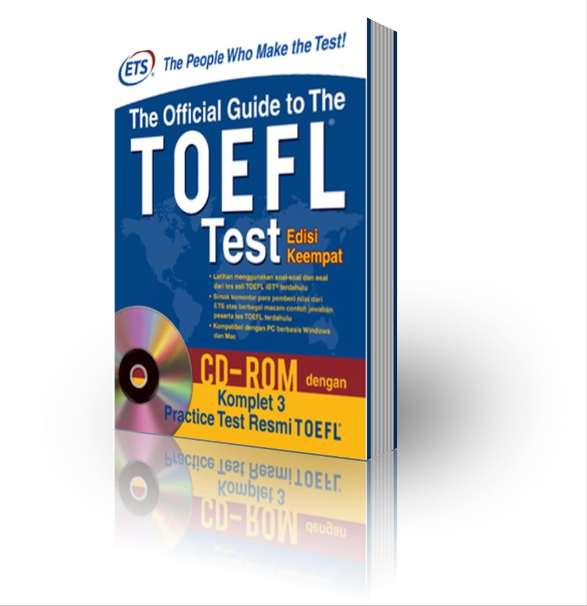

TOEFL

The TOEFL (Test of English as a Foreign Language) is a standardized test assessing the English skills of non-native speakers for academic purposes. It covers reading, writing, listening, and speaking. Essential for international students, a good TOEFL score is often required to study in English-speaking universities.
Testing dates and locations click.
Best website to practice click.
A good listening practice click.
Free TOEFL practice tests click.
SAT
The SAT is a standardized exam used primarily for college admissions in the United States. It evaluates high school students' readiness for college, testing their abilities in reading, writing, and math. Colleges use SAT scores to compare applicants fairly.
Learn from the experiences of others click.
Reading and Writting Tips click.
Best Channel for Math click.
The Only school offers SAT in Senegal(it is not free) click.
Duolingo
The Duolingo English Test is an online exam accessible anywhere, measuring a test taker's English proficiency. It's widely accepted by institutions and offers a convenient, fast, and affordable alternative to traditional English language tests, with results available within 48 hours.
Duolingo Website click.
Best chanel with Mr Luke click.
Duolingo Chanel click.
Duolingo Practice click.
Scholarships

Scholarships in the USA offer diverse funding opportunities for students globally. They accommodate to various fields, emphasizing academic excellence, leadership, and community involvement, and often consider financial need, aiming to make higher education accessible and rewarding for deserving candidates.
No Tuition-Free Colleges click.
Berea College No tuition click.
Mastercard Scholarshhip click.
International Students click.
Argo Visa
Argo Visa specializes in personalized U.S. visa interview preparation, offering one-on-one consultations with former Visa Officers. They provide tailored strategies and expert guidance, focusing on each applicant's unique situation to enhance their chances of successful visa acquisition for international students.
Argo Visa Website click.
Argo Visa Youtube Chanel click.
I watch this over 100times click.
International Students click.